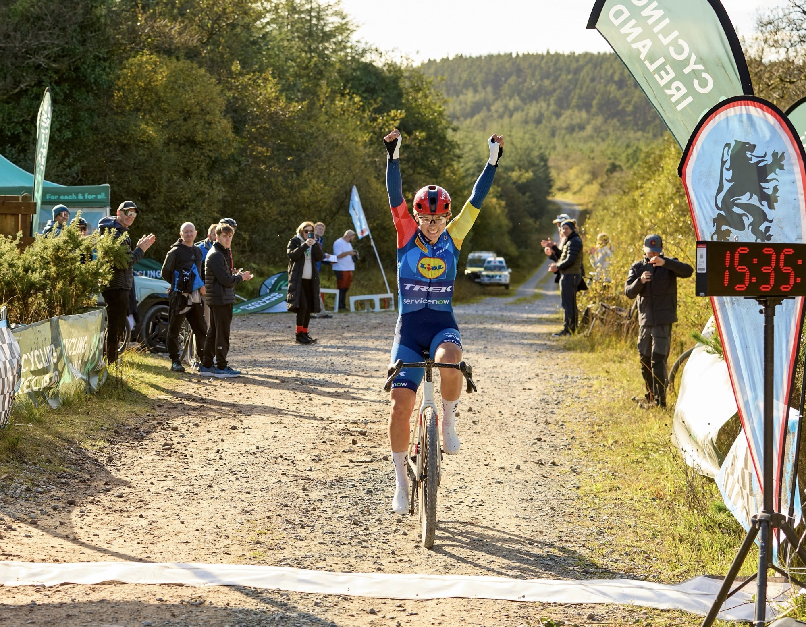

Cigala Cycling × Vivify Sports
Nutritional
Guide
A practical guide to healthy habits, training and performance.

Marine Lenehan
Sports Nutritionist · Vivify Sports
Matteo Cigala
Head Coach · Cigala Cycling
A practical guide to healthy habits, training and performance.
Each nutrient has its own colour, used all through the guide and on the plate.
In the food lists: ● choose often · ● in moderation or around training · ● avoid
The right nutrition strategy is individual. Match your intake to your training load, goals and recovery needs.
The body’s preferred energy source during moderate- and high-intensity exercise
Carbohydrates are stored in the muscles and liver as glycogen, which provides an important fuel source during training and competition.
General guidelines. Individual requirements should be adjusted according to training demands, recovery needs and energy availability.
For prolonged endurance events, some athletes can benefit from intakes approaching 90 g/hour or more under specialist guidance. When consuming higher carbohydrate quantities, combining glucose or maltodextrin with fructose can improve carbohydrate absorption and utilisation.
The digestive system can adapt to higher carbohydrate intakes during exercise. Practise your race fuelling strategy during training rather than introducing it for the first time on race day. Individualised gut training is recommended.
| High-fibre sources | Low-fibre sources |
|---|---|
| Brown basmati rice | White rice |
| Wholemeal pasta (wheat, spelt or buckwheat) | White pasta |
| Bulgur wheat | Melon |
| Lentils | Rice cakes |
| Beans | Well-cooked carrots |
| Quinoa | Couscous |
| Millet | Sports drinks |
| Wholegrain bread | Gels |
| Oats & porridge | Rice cereal |
| Wholegrain cereals | Refined cereals (cornflakes, puffed rice, cream of wheat) |
| Apples, pears & berries | Banana & dried fruits |
| Potatoes with skin | Potatoes without skin |
| Brussels sprouts | Jam & jellies |
| Artichokes | Honey, maple syrup & table sugar |
| Butternut squash | Canned fruits |
Both groups have a place in an athlete’s diet. Higher-fibre carbohydrates are beneficial for everyday health, digestion and satiety. Lower-fibre options can be particularly useful before and during exercise because they are often easier to digest.
| Meal – 50 g carbs |
|---|
| 150 g pasta (125 g brown pasta) |
| 300 g potatoes |
| 130 g brown rice (160 g white rice) |
| 3 slices of brown bread |
| 80 g quinoa |
| 75 g couscous |
| 75 g oats |
| 3–4 pancakes |
| Snack – 30 g carbs |
|---|
| 1 banana |
| 40 g dried fruit |
| 3 kiwis |
| 2 medium slices of sourdough |
| 1 large cereal bar |
| 5 oatcakes |
| 45 g oats |
| 1.5 crumpets |
The glycaemic index measures how quickly carbohydrate-containing foods raise blood glucose levels compared with a reference food.
Generally produces a slower rise in blood glucose.
Generally produces a faster rise in blood glucose.
Neither category is inherently good or bad. Low-GI foods suit everyday meals; higher-GI foods can be practical before, during or after exercise when rapid carbohydrate delivery helps. Fibre, portion size, preparation and the composition of the meal also influence the blood glucose response.

Essential for muscle repair, recovery and adaptation to exercise
Protein provides the amino acids required to build and maintain muscle tissue and support many physiological processes.
| Animal based | Animal basedTo avoid | Plant based | Isolated forms |
|---|---|---|---|
| Chicken fillets | Processed red meats | Quinoa | Whey protein |
| Turkey fillets | Sausages, hot dogs | Tofu | Casein protein |
| Grass-fed red meats | Bacon | Seitan | Rice protein |
| Fish & seafood | Cold cuts | Tempeh | Pea protein |
| Cottage cheese | Kebab meat | Lentils | Soy protein |
| Greek yoghurt | Chicken nuggets | Beans | |
| Free-range eggs | Breaded fish | Chickpeas | |
| Skyr yoghurt | Nut butters | ||
| Milk | Soy milk | ||
| Edamame | |||
| Nuts (almonds, cashew, walnut) | |||
| Seeds (pumpkin, flax, chia, sesame) |
Each portion below supplies roughly the same amount of protein.
| Meal – 30 g protein |
|---|
| 95 g chicken breast |
| 105 g lean beef mince |
| 100 g turkey breast |
| 100 g sirloin steak |
| 125 g tinned tuna |
| 100 g tuna steak |
| 200 g tofu |
| 50–100 g seitan |
| 300 g chickpeas |
| 130 g king prawns |
| 125 g salmon fillet |
| Snack – 15 g protein |
|---|
| 2.5 hard-boiled eggs |
| 130 g edamame beans |
| 125 g quark |
| 150 g skyr or Greek yoghurt |
| ½ scoop whey powder |
| 125 g low-fat cottage cheese |
| 200 g hummus |
| 430 ml milk |
| 135 g ricotta |
| 420 ml kefir |
| 75 g canned mackerel / sardines |
Plant proteins can absolutely support athletic performance. Including a variety of plant protein sources throughout the day helps provide all the essential amino acids. Soy, tofu, tempeh and seitan are particularly useful concentrated protein sources.
Essential for good health and athletic performance
Dietary fats provide energy, support hormone production, maintain cell membranes and help the body absorb vitamins A, D, E and K. They are also important for normal brain function, nerve transmission and immune health.
Each portion below supplies roughly the same amount of fat.
| Large – 20 g fat |
|---|
| 30 g walnuts |
| 20 ml olive oil |
| 145 g salmon |
| 40 g almonds |
| 1 medium avocado |
| 45 g pistachios |
| 100 g mackerel |
| 40 g peanut butter |
| Small – 10 g fat |
|---|
| 15 g walnuts |
| Handful of olives |
| 75 g smoked salmon |
| 20 g almonds |
| ½ avocado |
| 20 g pumpkin seeds |
| 100 g hummus |
| 20 g peanut butter |
Vitamins and minerals are essential for normal physiological function
Although required in smaller quantities than macronutrients, they play important roles in energy metabolism, oxygen transport, immune function, bone health and muscle contraction. Athletes should pay particular attention to micronutrients that may be difficult to obtain in sufficient quantities depending on their diet and training demands.
| Function | Nutrient & best sources | What it does |
|---|---|---|
| Antioxidant | Vitamin A (beta-carotene): Carrots, sweet potatoes, liver Vitamin C: Oranges, kiwi, red peppers, broccoli Vitamin E: Nuts, seeds, wholegrains | Neutralises free radicals to prevent oxidative stress and damage to cells. |
| Energy metabolism | B1, B2, B3, B5, B6, B7: Wholegrains, leafy greens, eggs, organ meats | Acts as coenzymes to convert carbohydrates, fats and proteins into energy. |
| Red blood cells & tissue support | Folic acid: Whole grains, spinach, lentils, asparagus, broccoli Vitamin B12: Sardines, tuna, cottage cheese, turkey, chicken, nutritional yeast Iron: Red meat, pumpkin seeds, almonds, apricots, dates, spinach, lentils Copper: Liver, shellfish, cashews, sesame seeds, dark chocolate, chickpeas | Iron produces haemoglobin to carry oxygen; folate and B12 form new red blood cells. Copper helps the body absorb and transport iron, and forms collagen for connective tissue. |
| Nerve transmission & muscle contraction | Sodium: Olives, ham, sea salt Potassium: Banana, potatoes, celery, courgettes Magnesium: Almonds, cashews, wholegrains, dark chocolate Calcium: Dairy, fortified plant milk, sardines | Conducts electrical nerve impulses, maintains fluid balance, and triggers muscle contraction and relaxation. |
| Protein synthesis, enzymes & immunity | Zinc: Shellfish, red meat, pumpkin seeds, chickpeas Selenium: Brazil nuts, tuna, mushrooms, poultry | Drives new protein synthesis (muscle repair), activates enzymes and strengthens immune defence. |
| Bone health & blood clotting | Vitamin D: Oily fish, egg yolks, fortified milk/cereals, sunlight Vitamin K: Kale, spinach, broccoli, Brussels sprouts (K1); fermented foods, cheese (K2) Phosphorus: Poultry, fish, dairy, pumpkin seeds, lentils | Vitamin D absorbs calcium; phosphorus builds strong bones and teeth (plus ATP energy); vitamin K binds calcium to bone and enables normal blood clotting. |
| Thyroid hormone production | Iodine: Seafood, dairy, eggs, iodised salt | Iodine produces thyroid hormones to regulate metabolic rate and energy expenditure. |
Quality choices to build every meal around
| Bread | 100% wholegrain, brown, rye, spelt, sourdough |
| Fish | Wild, non-farmed |
| Beef | Grass-fed |
| Chicken / eggs / turkey | Free-range |
| Milk | Organic, full fat |
| Non-dairy milk | Unsweetened oat, hemp, almond, soy |
| Yoghurt | Natural, full fat, Greek yoghurt, skyr |
| Other grains | Quinoa, bulgur, couscous, pearl barley |
| Legumes | Lentils, chickpeas, kidney beans, black beans |
| Butter | Real butter, avoid spreads (use raw) |
| Oats | Jumbo or porridge (instant tends to be more refined) |
| Rice | Brown basmati rice |
| Pasta | Brown, spelt or buckwheat pasta |
| Sweeteners | Honey, maple syrup, coconut sugar or rapadura sugar |
| Chocolate | Dark (the higher the cocoa percentage, the better) |
| Oils | Olive, linseed, nut, coconut, rapeseed |
| Salt | Maldon sea salt or Himalayan salt |
| Tinned fish | Mackerel, sardines, tuna |
| Nuts | Almonds, walnut, Brazil, pecan, cashew |
| Nut butters | Organic, no added sugar or oil |
| Cereal bars | Nakd, Clif, Nature Valley (best to make your own) |
| Vegetables | Fresh, local, in season (prefer green veg and potatoes) |
| Fruit | Berries, citrus, apples, bananas, kiwi, pineapple |
Improve training quality, recovery and performance
The objective is to provide sufficient energy before exercise, fuel demanding sessions and replenish nutrients afterwards.
Appropriate energy intake, carbohydrate availability and protein distribution are essential for training adaptations, recovery and long-term performance.
Practical rules from the Cigala Cycling coaching team
Recovery is when the body adapts to the stress of exercise and the real training effect takes place. Fluid, electrolytes, carbohydrates and protein are the foundation of recovery nutrition.
| Protein after training | Carbs to match |
|---|---|
| 20 g protein | 60 g carbs |
| 25 g protein | 75 g carbs |
| 30 g protein | 90 g carbs |
Water is essential for thermoregulation, nutrient transport and muscle contraction
Even mild dehydration can increase cardiovascular strain and negatively affect exercise performance, particularly in hot conditions.
Hydration needs are individual. Sweat rate, sodium losses, exercise intensity and environmental conditions should guide your hydration strategy.
Weigh yourself before and after a ride, without clothes and after going to the toilet. Every kilogram lost is about one litre of sweat.
| Example | Before | After | Fluid drunk | Sweat lost | Drink to recover |
|---|---|---|---|---|---|
| 2-hour ride | 70.0 kg | 69.0 kg | 0.5 L | 1.5 L (0.75 L/h) | 1.25–1.5 L |
Sweat lost = weight lost + fluid drunk. To recover, replace 125–150% of the weight lost. Sweat also carries potassium, magnesium, calcium and iron, so include them in your diet, especially in summer.
Losing more than 10–12% of body weight in fluid is dangerous. Plan your bottles before the ride, not when you are already thirsty.
The bottom line: finding balance is the key
The food you choose to eat will really have an impact on your energy levels and performance: you are what you eat. We don’t believe in dieting. The main goal is to make healthy eating simple and every meal enjoyable.
Fill your plate according to the demands of your day: more fruit and vegetables when training is light, and more grains as training volume and intensity increase.
You can’t drive a van across the country with an empty tank. Your needs depend on your training load, gender, fitness level and body composition.
Put extra carbs before high-intensity sessions (Zone 4 or higher), long rides of 3+ hours and race days. Protein belongs in every meal.

Marine Lenehan · Sports Nutritionist & World Tour CyclistThis guide provides general nutrition advice. For a more individualised approach, Vivify Sports offers personalised nutrition support tailored to your goals, lifestyle and training demands. Through an assessment of your dietary habits, nutritional intake and individual needs, we help you develop sustainable strategies to improve your health, performance and relationship with food.
Your initial consultation includes:
Follow-up consultations and personalised nutrition coaching plans are also available.
Book a discovery callBy assessing your dietary patterns, relationship to food, macronutrient and micronutrient balance, Vivify Sports gives you tailored solutions to reach your goals, looking particularly at:
You receive a full, in-depth report and a Vital Hygiene Program, with personalised advice on food, movement and tools to manage stress. You can book several sessions to add feedback and monitoring over a longer period.
Nutrition is part of every Cigala Cycling coaching package: training and fuelling are planned together, so you have the energy for the sessions that matter.
| Included | All packages | Advanced & Premium |
|---|---|---|
| This nutritional guide | ✓ | ✓ |
| Blood panel review from our sports nutritionist | ✓ | ✓ |
| Access to work 1-to-1 with our nutritionist & mental coach | ✓ | ✓ |
| Daily carbohydrate recommendation for every session | – | ✓ |
| Nutritional consult with our sports nutritionist | – | ✓ |
A practical framework for health, performance & recovery
Your primary fuel source. Adjust intake to training duration and intensity.
Supports muscle repair, recovery and adaptation. Include protein regularly across the day.
Provide energy and essential fatty acids for cell, hormonal and cardiovascular health.
Vitamins and minerals support energy metabolism, oxygen transport, immunity and normal body function.
Replace fluids according to individual sweat losses. Consider electrolytes during prolonged or hot sessions.
Start fuelled and hydrated
Match carbohydrate and fluid intake to the session
Replenish carbohydrates, include protein and rehydrate
Match your intake to your training load, goals and recovery needs.